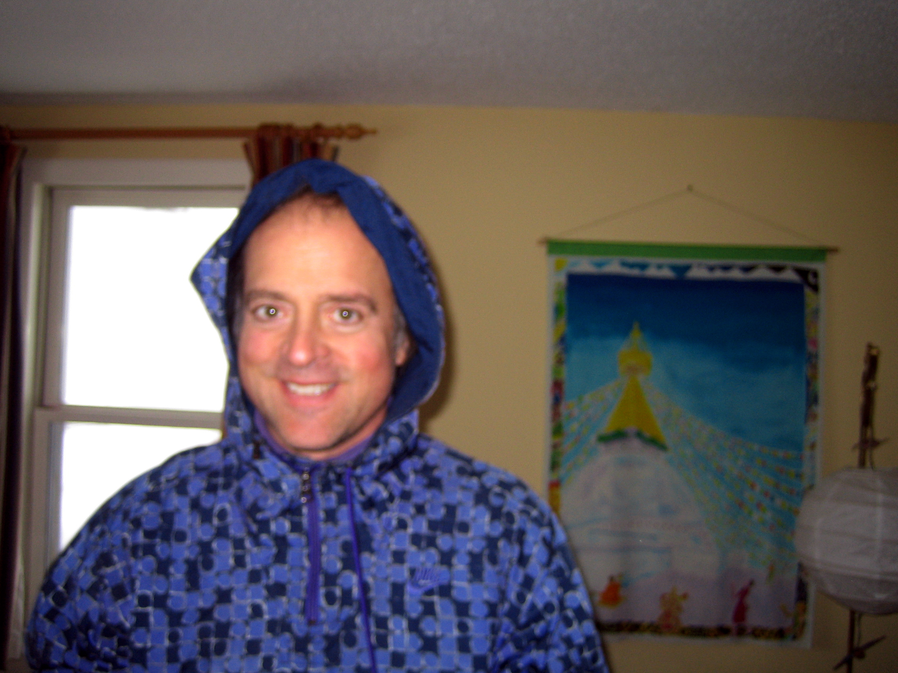
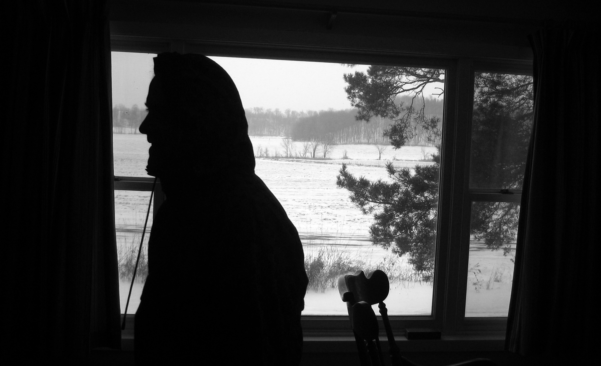
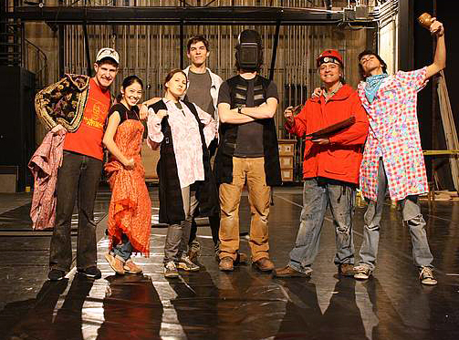

Remembering Rich: The Magic of Richard Ashcraft Wilson
Compiled from journals written June 2022 and June 2026
Many moons ago, when I was still quite young in many ways, I met a man by the name of Rich. Richard Ashcraft Wilson. Rich. Richie. Richard. Ricardo. I called him by many names, sometimes in jest and sometimes in earnest.
I met Rich while working at the theater shop at Macalester College, where he served as our assistant supervisor. At the time, I was a lowly stagehand—a very green carpenter—cleaning, mopping, arranging, and carrying heavy set pieces. I was mostly ignored by the core faculty because I wasn’t a drama major or a theater design minor. I was just a guy who could hold a drill, use a saw, and maybe paint a wall without blowing the campus down. Because of that, I felt like a complete nobody in the scene shop. But Rich and I instantly hit it off over our shared travels through Asia. He recognized me for exactly who I was.

Rich was a remarkably talented artist who needed the work, but above all else, he was just incredibly cool. He’d wander over to my station and tell me wild stories about his world travels, sketching out ideas and sharing his raw creations with me. He would slip in a joke or a funny memory, or casually try to impress me by mentioning how he had been best friends with Prince back in high school—insisting that Prince sported a massive afro, the absolute biggest he had ever seen.
Rich was deeply respected and admired among the students he worked with at Macalester, though he was often neglected and short-changed by the permanent department staff—something that genuinely needs to be voiced. He mostly shrugged the politics off, making the absolute best of the hand he was dealt. Rich was extremely patient and knowledgeable. He taught me most of the technical aspects of theater production that no one else cared to explain, doing so in a fun, clever way that kept me engaged even when executing the most trivial tasks. He never hesitated to step in and help me when I found myself in a structural pickle.
He was also the bravest man I had ever met. I watched Rich tackle some of the most daunting physical tasks in the theater, feats I found absolutely amazing. He would scale the tallest A-ladder, building a precarious bridge of ladders just to stand and balance unsupported off the very top, all so he could adjust a specific light fixture until it sat exactly how he wanted. He would navigate to the highest floor of the catwalk and lift immense weights, swinging them out over the abyss to counterbalance the heavy drapery so the rigging system would run smoothly. That was one of those jobs I absolutely loathed, but he could do it without blinking an eye. He was entirely fearless when it came to heights or the threat of falling. I was always deeply impressed by his fearlessness and his raw skill—both handled so nonchalantly, and usually with a giant grin on his face.

He was a man who could genuinely do it all, spending long, exhausting hours painting intricate new backdrops for a play that would only run for three brief days. He was an entertainer, a dreamer, an artist, and everything else you could possibly imagine from someone who ultimately left us wanting more.
He was exceptionally generous and could spin the most wonderful narratives. He loved to swim, and when we hit the water together, he would glide beneath the surface like a dolphin, covering distance without taking a single breath. He even invited me to spend a few days over winter break at his home out in Wisconsin. In those days, I didn't know the first thing about surviving cold weather—how to layer properly, how to suck it up when your fingers went completely numb, or how to stay calm in a freeze. He took me out for a brief cross-country skiing outing during which I must have wiped out ten times, managing to clear only an eighth of a mile.
My most beloved and prized memory of him was when he asked me to help him run a shadow puppet show alongside Harry Waters Jr.—famous for playing Marvin Berry in Back to the Future. That was the most intimate, collaborative, and joyful project I ever participated in at Macalester. The three of us huddled tightly behind a small classroom projector, bantering, joking, and weaving a story together. I can’t recall the specifics of the script itself, but I remember it was an absolute blast, especially when I started running into technical difficulties, messing up the lighting cues and fracturing the dialogue we had loosely agreed on. Rich thrived in those moments of spontaneous chaos, joking about my frantic struggles with the projector bulbs.

The world lost Rich years ago after a series of tragic, unfortunate developments. He left the university theater shortly after I graduated. Around that time, the school had newly installed a strict catwalk restraint safety system. Maintenance staff were suddenly required to wear a safety vest, carry a walkie-talkie or some sort of alarm transmitter, and clip themselves directly into safety lines running up and down the catwalk. This layout didn't exist when Rich initiated his tenure at the theater, and he was deeply reticent about the new constraints. I myself had explicitly warned others that the catwalk architecture was packed with low-hanging, sharp steel edges that seemed highly dangerous.
During one of his solo shifts, Rich struck his head violently against one of those sharp iron edges, losing consciousness shortly afterward. He was eventually discovered by someone, passed out on the stairwell, and rushed to the hospital. Medical imaging revealed a large tumor deep in his brain. The surgeons decided to operate to excise the mass, and it was during that procedure that Rich tragically lost the physical use of the entire side of his body.
During this painful chapter, I was already living overseas in China, battling deep bouts of depression and intensely missing my community back home. I would write Rowan long letters detailing my travels, and Rich and I would talk on the phone whenever I could patch a call through. He called me to explain everything that had happened, and I spoke to him shortly after he lost his mobility. He sounded sad in a way I had never heard before; he was truly struggling to navigate his new physical boundaries. I desperately wanted to catch a flight home to help him out because I loved him, but I was also paralyzed by fear—terrified of facing the reality of losing him.
We managed a couple more phone conversations before he passed away. He went so quickly that I never had the chance to make it back across the ocean to hang out with him one last time. But even though he was fighting a losing battle with his body, his spirit was completely intact during those final calls—he was still very much the master storyteller, very much the artist.
It’s been many years since Rich left us, and not a single day goes by that I don’t think about him. For the longest time, I was completely unable to speak of him or compose a proper eulogy. I've long carried a deep desire to travel to his gravesite and bring him a massive bouquet of flowers—filling the space with all the vibrant colors he absolutely adored. But I realized it wouldn’t do any real good just to talk to him in isolation without telling the world about the incredible things he did for me and the people surrounding him at the time. If I never committed these memories to paper, then outsiders would never know the sheer magic they missed out on by not being around his energy.
These days, I think about him constantly when I contemplate what it truly means to completely embody your art, and what it means to be a fantastic human being. I wish Rich were still here. I sometimes find myself prowling through old online obituaries and the digital guestbooks others have left behind, searching for any scrap of writing that mentions his energy, his smile, and his art—all things I miss profoundly.
He painted a portrait of me once, which became my most prized material possession. I have since lost the physical canvas, just as I have lost him, but I still hold both perfectly intact within my memory lines. Will I ever meet another soul quite like him? Maybe. Will his unique magic endure long after I am gone? Almost certainly, yes.
I am incredibly grateful that we keep his memory alive, and that he continues to keep us company even after all these decades. I know I will miss him for the rest of my life, and I send a massive hug to everyone who knew him—I know you feel this massive, echoing void just as deeply as I do.